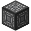
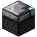
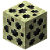

You'll find here the list of all Electrona's blocks.
The Solar Panel of Tiers 1 is a simple generator. It's a Minecraft replica of the solar panel. It can only generate power during the day with a direct sky access. The power generated depends on the weather. (Generate less if rainy or stormy)
The Solar Panel of Tiers 2 is the same solar panel as the Tiers 1. The only differences are the amount of ELs generated per tick and the maximum power capacity.
The Water Turbine is a hydrolic generator. It needs water to generate power. The water source must be placed in front of the Paddle and there must be one air block in the back for the water to flow out.
The Heat Generator is a thermal generator. To power it, you need to right click on the generator with a Lava Bucket.
The Biomass Generator is a generator that takes your biomass and turns it into energy. If
you are a modmaker, you can add your own biomass with the tag forge:biomass.
The Nuclear Generator Controller is a generator which uses Nuclear items (Uranium Bars) to make energy. It needs to be above a block named the Cooler to work. To avoid overheating it, you must put water into the Cooler with a Water Pump that needs to be placed next to the Cooler. If the Nuclear Generator Controller explodes, it has 25% chance to spawn a Singularity which will evolve into a Black Hole.
The Creative Generator is a generator only obtainable in Creative mode. It's a perfect generator to make creative tests.
The Battery is a block that stores ELs. (Energy) It has 2 slots. The input slot is where you place a Portable Battery to take power from the Portable Battery and place it into the Battery. The outplut slot does the opposite, it gives power from the Battery to the Portable Battery.
The Cable is a block that transfers energy from any Generator to any Machine or Battery.
The Blue Cable is a block that transfers energy from any Battery to any Machine.
The Water Cable is a block that transfers water from any Water
Pump to any machine with the tag forge:electrona/has_water_tank.
The EL Converter is a block that converts ELs into FE (Forge Energy) to make Electrona compatible with any other mod, or VP, the unit of the mod Machineria. Its slots system are the same as the Battery.
The Compressor is a machine that compresses things. It is used to craft many items you can see in the item page of the website. All of its recipes has been registered in JEI (Just Enough Items) which is a recommanded mod to use.
The Teleporter is a block that teleports you to another Teleporter, in another location. To
use it, you need to do a right click with a Teleport
Saver on the destination Teleporter (to save the coordinates inside the Teleport
Saver) and then, put the Teleport Saver inside the slot of the Teleporter and click on the
button to link the coordinates. There is even a button to delete the coordinates when you
use the Teleporter! (If you're using the Teleporter at the spawn to teleport to your secret
base, for example)
You can find a video that shows how the Teleporter works right here.
The Dimension Linker is a semi-machine that has to be placed under the Teleporter. If you place it, the Teleporter will be able to teleport you in every dimension. To do that, all you need is to enter the dimension ID in the Dimension Linker and click the button to save it. Then if you put the right coordinates in your Teleporter and that a Teleporter exists in the dimension entered and coordinates in the Teleporter, you'll be teleported!
The XP Generator is a machine that takes Emeralds to generate XP Levels.
The Purificator is a machine that purifies materials into others. Just as the Compressor, its recipes are registered in JEI so it's recommended to use it along with Electrona.
The Water Pump is a machine that pumps Water to give it to every block next to it, only if
the neighbour block has the tag forge:electrona/has_water_tank.
The Cooler is a block that is used to cool down the Uranium Bars used to make a Nuclear Generator. It forms, with the Nuclear Generator Controller, the structure known as the Nuclear Generator Structure.
The Sprayer is a machine that can spread in a certain radius the effect of potions or food that are placed in its main slot. You can increase the radius effect of the Sprayer with a maxiumum of 3 Wireless Boosters.
The Mining Machine is a machine that can only mine below itself. The main slot is for a pickaxe. The Mining Machine will only be able to mine a block if the pickaxe can break it. (like a player) Two extra slots are here to have one Empty Bucket in each. Useful not to be blocked when the pipe encounters a Lava or Water Source. It is sold by the Engineer.
The Conveyor is a simple machine that, as long as powered, moves every entity (mobs and items/blocks dropped) that are on it. Very handy when it comes to move them without Water. It is sold by the Engineer.
The Tin Ore is an Ore than only spawns in the Overworld, in every biome, between layers 0 and 40. Once mined, it gives Raw Tin to make most of the machines and items of the mod.
The Lead Ore is an Ore that only spawns in the Overworld, in every biome, between layers 0 and 25. Once mined, it gives Raw Lead to make some blocks and an Armor.
The Uranium Ore is an Ore than only spawns in the Overworld, in every biome, between layers 0 and 30. Its use is to be compressed to eventually make Uranium fuel. (Uranium Bars)
The Gravitonium Ore is an Ore that only spawns in the End, wherever you can find End Stone, bewteen layers 50 and 20. When mined, it gives Gravitonium.
The Block of Tin is a decorative block, made of 9 Tin Ingots.
The Block of Steel is a decorative block, made of 9 Steel Ingot.
The Steel Crate is a storage block. It has the same storage capacity as a Chest.
The Block of Lead is a decorative block, made of 9 Lead Ingots.
The Lead Crate is a storage block. It has the same storage capacity as a Chest.
The Lead Door is a variant of a Door. It's also a decorative block.
The Block of Gravitonium is a decorative block, made of 9 Gravitonium.
The Machine Casing is a block made of Tin Ingots and very important to build most of the machines and some generators.
The Compressed Obsidian is decorative block.
The Singularity is unknown. It forms a Black Hole and has 25% chance of spawn when a Nuclear Generator Controller explodes. A Black
Hole can only be stopped if the Gamerule doBlackholesExist is
set to false, or by a special containment with block under the tag forge:electrona/stops_black_hole.
The Nuclear Bomb is a bomb using nuclear fuel to explode. To explode, the slots need to be filled in two ways: a nuclear bar in the left slot and a dual nuclear bar in the right slot, or a dual nuclear bar in the left slot and a quad nuclear bar in the right slot. Furthermore, the bomb explosion can be triggered in two different ways: by dropping the bomb over 5 blocks high or with a right-click on it, like a TNT. You can find a video that shows how the Nuclear Bomb works right here.
The Radioactive Dirt is a block of Dirt that is radioactive. When you step on it or if you have it in your inventory without protection, you are irradiated. This block only appears in a Nuclear Biome, or near a Nuclear Explosion. (due to the detonation of a NuclearBomb)
The Chardwood Log is a log that was burnt by a Nuclear Explosion. It can either be created by a Nuclear Explosion, or found in a Nuclear Biome.
The Energetic Lightning Rod is a special lightning rod that attracks Energetic Lightning Bolts within its chunk. It can then generate energy from these Lightning Bolts and transfer the energy to machines or batteries.
Radioactive Grass spawns in Radioactive Biomes. It can only be placed on Radioactive Dirt and is a decorative block.
The Radioactive Tall Grass is the same block as the Radioactive Grass, but taller.
The Gravitor is a block that generate a special gravity field around it that only affect blocks. To be activated, it needs to be powered with energy, and surrounded by Blocks of Gravitonium. The more blocks it's surrounded by, the bigger is the gravity field. It works the same as a Conduit, but the core needs energy.